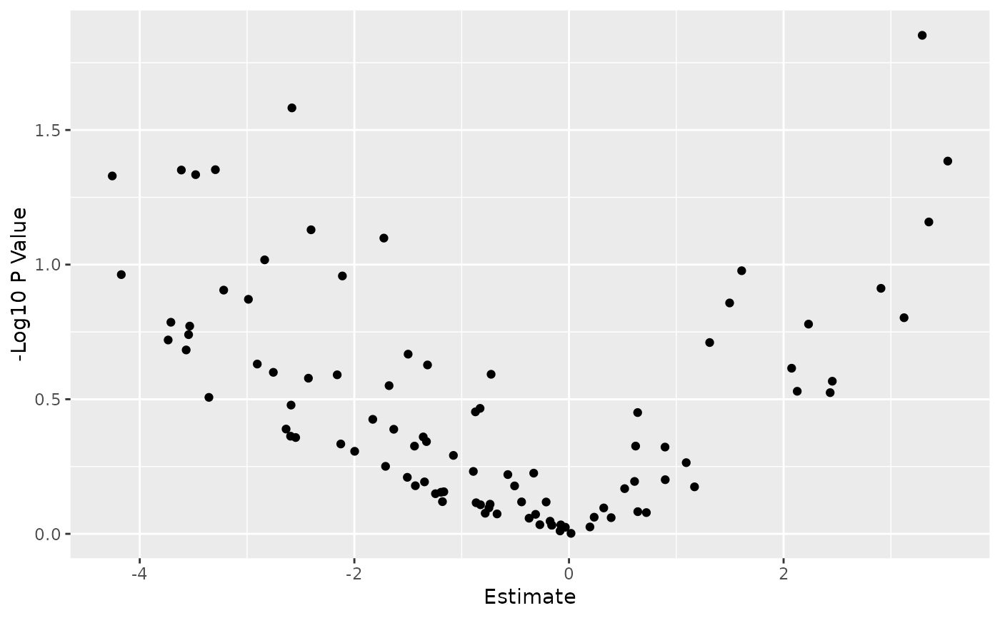

Given a PharmacoSig, this will plot a volcano plot, with parameters to set cutoffs for a significant effect size, p value, to pick multiple testing correction strategy, and to change point colors. Built on top of ggplot, it will return the plot object which can be easily customized as any other ggplot.
Usage
# S3 method for PharmacoSig
plot(
x,
adjust.method,
drugs,
features,
effect_cutoff,
signif_cutoff,
color,
...
)Arguments
- x
PharmacoSiga PharmacoSig object, result of drugSensitivitySig or drugPerturbationSig- adjust.method
character(1)orlogical(1)either FALSE for no adjustment, or one of the methods implemented by p.adjust. Defaults to FALSE for no correction- drugs
charactera vector of drug names for which to plot the estimated associations with gene expression- features
charactera vector of features for which to plot the estimated associations with drug treatment- effect_cutoff
the cutoff to use for coloring significant effect sizes.
- signif_cutoff
the cutoff to use for coloring significance by p value or adjusted p values. Not on log scale.
- color
one color if no cutoffs set for plotting. A vector of colors otherwise used to color points the in three categories above.
- ...
additional arguments, not currently used, but left here for consistency with plot
Value
returns a ggplot object, which by default will be evaluated and the plot displayed, or can be saved to a variable for further customization by adding ggplot elements to the returned graph
Examples
data(GDSCsmall)
drug.sensitivity <- drugSensitivitySig(GDSCsmall, mDataType="rna",
nthread=1, features = fNames(GDSCsmall, "rna")[1])
#> Summarizing rna molecular data for: GDSC
#>
|
| | 0%
|
|======================================================================| 100%
#> Computing drug sensitivity signatures...
plot(drug.sensitivity)
#> Warning: Removed 41 rows containing missing values (geom_point).
